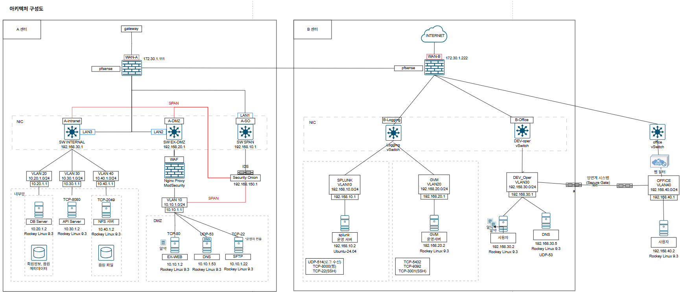

Hello, I'm
강인석
Information Security Manager
스스로에게는 성취를 향한 독기와 엄격한 완벽주의로 끝까지 책임을 다하지만, 타인에게는 관대함과 높은 도덕성을 바탕으로 공평하게 소통합니다. 이러한 치열한 자기 관리와 따뜻한 포용력의 균형을 통해, 조직이 가장 신뢰할 수 있는 든든한 보안 담당자가 되겠습니다.
About Me
치열하게 자신의 길을 개척하는 동기들을 보며, 저 역시 스스로에게 부끄러움이 없는 단단한 역량을 갖추겠다는 강한 독기와 성취에 대한 야망을 품게 되었습니다. 이러한 목표 의식은 제 안의 엄격한 완벽주의와 맞물려, 저 자신을 끊임없이 채찍질하고 주어진 책임을 타협 없이 완수하게 만드는 강력한 원동력이 되고 있습니다.
하지만 저의 엄격한 잣대는 오직 스스로에게만 향해 있습니다. 타인과 함께할 때는 배려와 수용성, 그리고 확고한 도덕성을 가장 우선시합니다. 조직 내에서는 누구보다 관대하고 공평한 태도로 동료들을 대하며, 서로에 대한 투명한 신뢰가 바탕이 될 때 비로소 올바른 방향으로 나아갈 수 있다고 믿습니다.
보안이라는 영역은 결국 기술 이전에 '사람에 대한 헌신'과 '신뢰'에서 출발합니다. 스스로에게는 완벽을 향한 치열함을, 타인에게는 따뜻한 도덕성과 공평함을 잃지 않는 균형감을 바탕으로 조직을 든든하게 지켜내는 보안 담당자가 되겠습니다.
Work Experience
정보보안 엔지니어 인턴
-
다크웹 위협 정보 스크래핑 및 실시간 모니터링 자동화: Python(BeautifulSoup4)을 활용하여 랜섬웨어 피해 정황이 확인된 타겟 기업의 다크웹 데이터 유출 사이트를 10분 주기로 스크래핑하고, 게시글 상태 변화를 실시간으로 비교 및 감지하는 파이프라인을 구축했습니다.
-
위협 인텔리전스(CTI) 연동을 통한 선제적 대응: 감지된 유출 데이터를 바탕으로 타겟 기업의 민감 데이터 노출 현황을 신속하게 파악하고, 피해 확산 방지 및 후속 대응을 위한 선제적 위협 알림 체계를 마련했습니다.
-
CVE 기반 맞춤형 Exploit 생성 모델 파인튜닝 및 환경 최적화: GitHub API와 Exploit-DB를 활용해 특정 CVE에 대한 취약점 정보 및 공격 코드(Exploit) 데이터를 수집하고, 이를 맞춤형 공격 코드로 자동 생성하도록 LLM 파인튜닝을 수행했습니다. 이 과정에서 사내 GPU VRAM 가용량의 한계를 극복하기 위해 양자화(Quantization) 기법을 적용하여 메모리 사용량을 최적화함으로써, 제한된 인프라 내에서도 안정적으로 학습을 완료하고 모델을 검증할 수 있었습니다.
Education & Certifications
창원대학교 컴퓨터공학과
2024.03 - 2027.02 졸업예정
운영체제, 네트워크, 컴퓨터 구조 등 컴퓨터공학의 핵심 원리를 학습하며 시스템 전반에 대한 깊은 이해도를 갖추었습니다. 이를 바탕으로 인프라 구조를 파악하고 취약점을 분석하는 보안 엔지니어링의 탄탄한 기반을 마련했습니다.
Certifications
보유 및 취득 예정 자격증
-
정보처리기사 (2025.06 취득)
-
SQLD (2026.03 취득)
-
리눅스마스터 2급 (2018.12 취득)
-
컴퓨터활용능력 1급 (2018.12 취득)
-
정보보안기사 (필기 합격)
Skills
Programming
- Python
- Flask
- Automation
- Web Crawling
Security & Infrastructure
- Firewall
- IPsec VPN
- SIEM
- VLAN 망분리
Tools & Others
- Git & GitHub
- Linux Environment
- Network Fundamentals
Projects



Publications & Papers
한국정보처리학회 / 2024.10
이 연구는 LLVM IR 을 활용한 보안 취약점 탐지의 새로운 접근 방식을 제시합니다. Juliet Test Suite 의 CWE-121 Stack-based Buffer Overflow 데이터를 사용하여 Word2Vec 으로 코드를 벡터화하고 LSTM 모델로 학습했습니다. 모델 성능은 정확도 90%, 정밀도 87%, 재현율 93%, F1 스코어 90%로 평가되었습니다. 향후 다양한 보안 취약점을 다룰 수 있는 다중 분류 모델로 확장 가능성을 제안합니다.
한국정보보호학회 / 2026.09
클라우드 침해 조사에서는 서로 다른 자격증명으로 수행된 호출을 연결하고 각 호출의 대상을 확인해야 하지만, 발급 결과와 후속 호출 주체를 별도로 처리하거나 resources 배열만으로 대상을 추출하면 필요한 연결이 누락될 수 있다. 본 논문은 accessKeyId를 기준으로 발급 대상과 후속 호출 주체를 통합하고 요청·응답 필드에서 대상을 추출하는 CloudTrail 그래프 모델을 제안하며, 워크로드 기반 이동 후보를 관측된 발급과 구분하여 조사 범위를 확장한다. 네 재현 시나리오에서 다중 필드 추출은 정답 자원 식별을 27/32에서 32/32로, 접근 근거 보존을 74/84에서 84/84로 높였고, 공통 조사 전략은 세 시나리오에서 필수 근거를 모두 보존하면서 전체 시간창 대비 반환량을 48.8~94.3% 줄였다.
한국정보보호학회 / 2026.09
클라우드 환경에서 발생하는 침해사고 조사는 API 호출 기록인 CloudTrail 로그에 크게 의존한다. 그러나 공격자가 로그 기록을 중지하거나 삭제하는 안티포렌식(Anti-forensics) 행위를 수행할 경우, 조사자는 행위 기록이 전무한 관측 공백(Observation Gap)에 직면하게 된다. 본 연구는 이러한 원본 로그 의존적 조사의 한계를 극복하기 위해, 인프라의 과거와 현재 상태 차이(△S)를 분석하여 다단계 침해 행위를 역추적하는 그래프 기반 추적 모델을 제안한다. 제안 모델은 외부의 격리된 보안 계정에서 다중 도메인 수집기를 통해 AWS 제어 평면의 위변조 불가능한 고유 메타데이터 스냅샷을 확보한다. 이후 추출된 리소스 상태 변화 데이터를 바탕으로 구조적 종속성과 시간적 인접성을 분석하여 흩어진 변경 사항들을 방향성 비순환 그래프(DAG)로 연결한다. Stratus Red Team을 이용한 다단계 공격 에뮬레이션 실험 결과, 제안 모델은 원본 로그 없이도 백도어 계정 생성부터 S3 버킷 정책 변조로 이어지는 인과 관계를 성공적으로 식별하였으며, 환경 내 발생하는 무관한 정상 상태 변화를 효과적으로 고립시켰다. 본 연구는 저비용 상태 비교 아키텍처를 통해 클라우드 환경의 선제적 포렌식 레디니스(Forensic Readiness)를 확보하는 실효성 있는 대안을 제시한다.
Leadership & Activities
사회리더 대학생 멘토링
다양한 배경을 가진 멘티 및 멘토와 교류하며 올바른 리더십과 소통 방식을 배웠습니다. 타인의 의견을 수용하고 함께 성장하는 조직 문화를 경험하며, 신뢰를 바탕으로 한 소통 역량을 길렀습니다.
굿네이버스 희망나눔꿈지원사업 멘토
야구 선수를 지망하는 중학교 2학년 학생을 대상으로 만다라트(Mandalart) 기법을 활용해 구체적인 목표 설정과 실행 계획 수립을 도왔습니다. 누군가의 성장을 돕는 과정에서 깊은 책임감과 배려심을 배웠습니다.
개인정보 모니터링단
온라인상의 개인정보 노출 및 침해 사례를 점검하고 신고하는 활동을 수행했습니다. 보안 담당자에게 필수적인 꼼꼼함과 데이터 보호에 대한 높은 윤리 의식을 바탕으로 안전한 디지털 환경 조성에 기여했습니다.